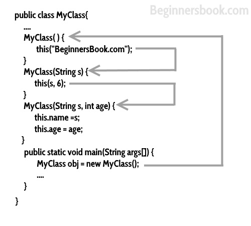

Calling a constructor from the another constructor of same class is known as Constructor chaining. The real purpose of Constructor Chaining is that you can pass parameters through a bunch of different constructors, but only have the initialization done in a single place. This allows you to maintain your initializations from a single location, while providing multiple constructors to the user. If we don’t chain, and two different constructors require a specific parameter, you will have to initialize that parameter twice, and when the initialization changes, you’ll have to change it in every constructor, instead of just the one.
As a rule, constructors with fewer arguments should call those with more

Let’s understand this with the help of an example.
Constructor Chaining Example
In this example, I have several constructors, one constructor is calling another constructor using this keyword.
this() should always be the first statement in constructor otherwise you will get this error message: Exception in thread “main” java.lang.Error: Unresolved compilation problem: Constructor call must be the first statement in a constructor
class Employee
{
public String empName;
public int empSalary;
public String address;
//default constructor of the class
public Employee()
{
//this will call the constructor with String param
this("Chaitanya");
}
public Employee(String name)
{
//call the constructor with (String, int) param
this(name, 120035);
}
public Employee(String name, int sal)
{
//call the constructor with (String, int, String) param
this(name, sal, "Gurgaon");
}
public Employee(String name, int sal, String addr)
{
this.empName=name;
this.empSalary=sal;
this.address=addr;
}
void disp() {
System.out.println("Employee Name: "+empName);
System.out.println("Employee Salary: "+empSalary);
System.out.println("Employee Address: "+address);
}
public static void main(String[] args)
{
Employee obj = new Employee();
obj.disp();
}
}
Output:
Employee Name: Chaitanya Employee Salary: 120035 Employee Address: Gurgaon
But what is the point of constructor chaining?
i.e. why would I ever want to do this?
It is done to achieve run time polymorphism. One can pass different values at runtime
you would need it to reduce the code size when there is something repetitive
Eg: for a lift to be programmed you’ll need to type the code for the things to be done in the 1st floor even when you have to go to the 2nd or 3rd floor you can just call the constructor chaining to skip the code of 1st floor when the 3rd floor button is pressed.
hope you understood..
Thanks so much ! Now I easily understood the concept of Constructor chaining. Thanks Author !
But what is the difference between Constructor Overloading and Constructor Chaining
In the above scenario how many objects gets created in heap, since constructors are using for creating an object. But here you are using constructor chaining to call 4 constructors at a time by passing 3 arg constructor.
Physically there should be only one object that is ‘obj’, then what about rest?
I’m suspecting all rest of the objects are created in heap and it does not have references, so those objects are abandon objects (garbage will clean these objects).
Please reply.
Thanks,
Devendra Modem
Thanks,
Devendra Modem
Then What is the difference between Constructor Overloading and Constructor Chaining the above example is for Constructor Overloading